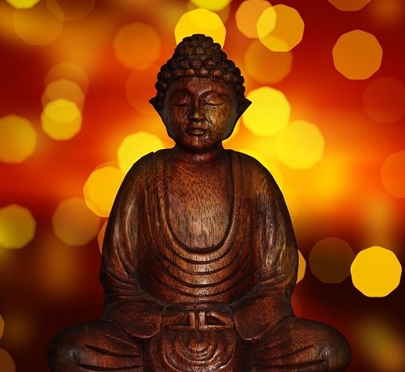

Bloom Yoga Studio can be found in the beautiful city of Brasov. At our studio we focus on achieving a healthy relationship between one’s body and mind through guided meditation and daily yoga classes. Our instructors teach in both romanian and english so everyone can feel welcome.
|  | Yoga is an ancient form of exercise that focuses on strength, flexibility and breathing to boost physical and mental wellbeing. The main components of yoga are postures (a series of movements designed to increase strength and flexibility) and breathing. The practice originated in India about 5,000 years ago and has been adapted in other countries in a variety of ways. The origins of yoga are shrouded in the mists of time. The ancient wisdom is known as "the supreme science of life" is believed to have been revealed to the great sages of India several thousand years ago. Yoga is an ancient system of physical and mental practices that originated during the Indus Valley civilization in South Asia. The fundamental purpose of yoga is to foster harmony in the body, mind, and environment. Yoga professes a complete system of physical, mental, social, and spiritual development. For generations, this philosophy was passed on from the master teacher to the student. The first written records of the practice of yoga appeared around 200 BC in the Yogasutra of Patanjali. The system consisted of the eight-fold path of Ashtanga yoga. |